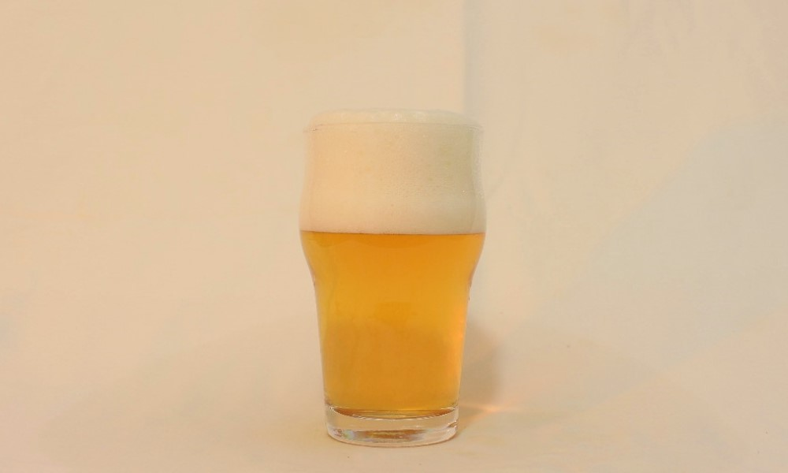
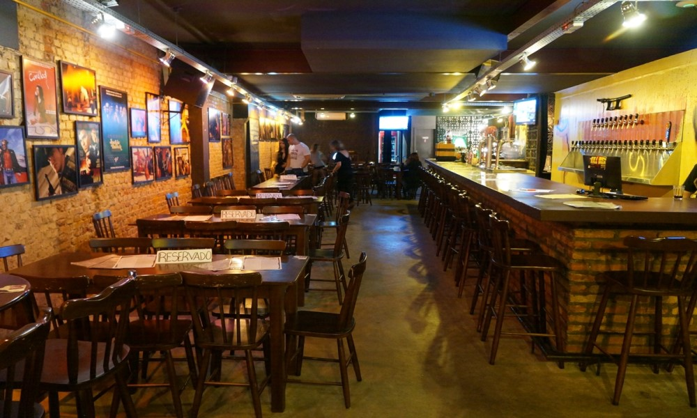

NACIONALIDADE // República Tcheca
CARACTERÍSTICAS // brilho dourado, limpidez e sabor refrescante
HARMONIZAÇÃO // Queijos frescos, como ricota, feta e mozarella que são queijos leves, doces, refrescantes e cítricos
INGREDIENTES // água, malte, lúpulo e levedura
Descrição
Também chamada de Pisen(ou Pils), é uma lager que teve sua origem na República Tcheca. Revolucionou o mundo cervejeiro devido a seu sedutor brilho dourado, limpidez e sabor refrescante. Se tornando assim, a cerveja mais consumida mundialmente. Pilsen na verdade é uma cidade no oeste da República Tcheca, berço do estilo de cerveja pilsner. O termo "pilsner" originalmente significava "de Pilsen", surgindo assim, seu "apelido" mais famoso aqui no Brasil, a Pilsen.
Onde encontrar?

QUENTIN'S BAR
EndereçoRua Gen. Lima e Silva, 918
Centro Histórico, Porto Alegre - RS